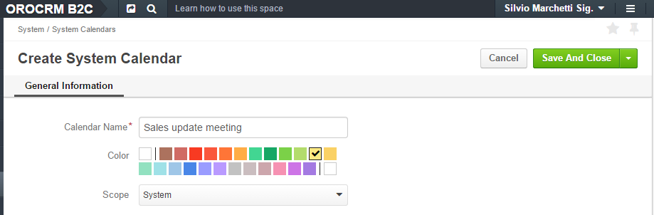
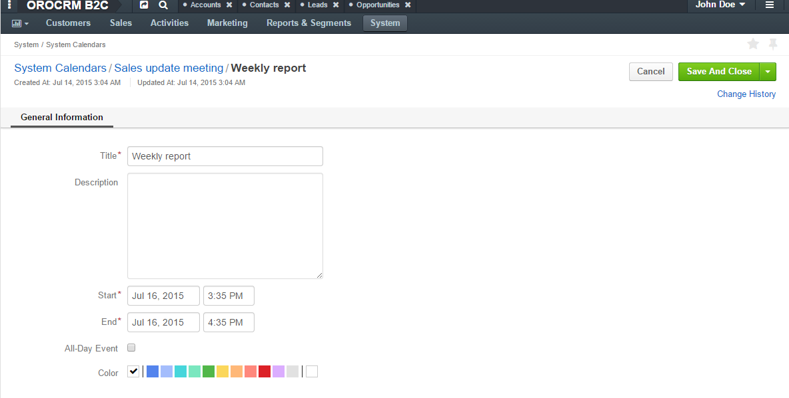
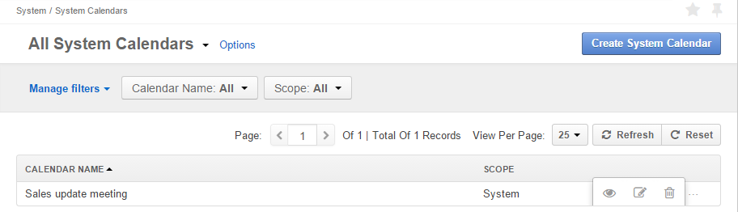
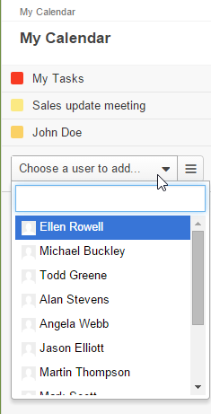
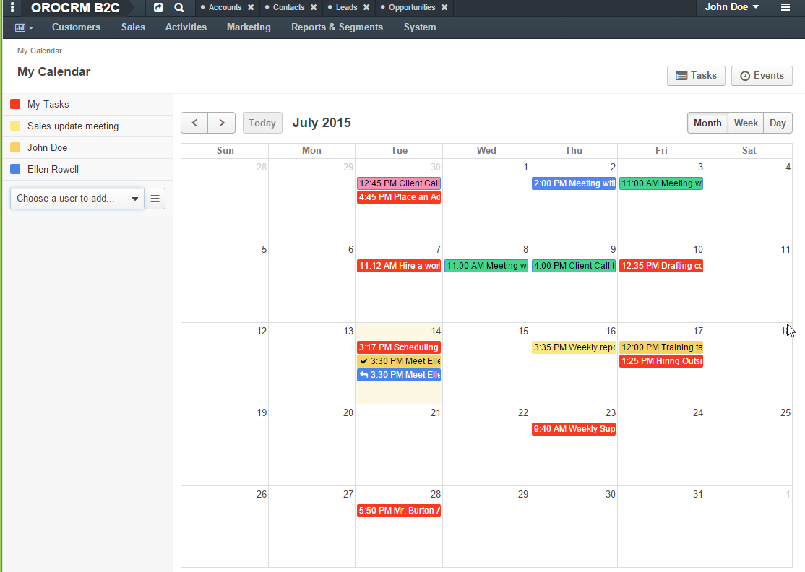

Calendars¶
Efficient business today is hard to imagine without an easy-to-understand and up-to-date schedule. OroCRM provides each user with a calendar with tasks and events related to the specific user, to other users (subject to the roles and permissions defined), as well as to events defined for the whole organization or system.
Tasks and Calendar Events¶
You can create task and add calendar events.
Each task/event will have an owner (user, who has created it and other users, subject to roles and permissions defined) and the user, to whom the task/event has been assigned.
System and Organization Calendars¶
Events in the System and Organization calendars can be viewed by all the users within the system/organization. The ability to create, edit, and delete events depends on the user’s roles and capabilities.
Create System and Organization Calendars¶
- Go to the System>System Calendars.
- Click the Create System Calendar button.
- The Create System Calendar page will appear:
Define the following fields:
| Field | Description |
|---|---|
| Calendar Name* | This is the only mandatory field. Defines the name used to refer to the calendar in the system. |
| Color* | Choose the color used to highlight events in the calendar by default. |
| Scope* | Define if this is a system or organization calendar (meaningful for enterprise edition only). |
For example, we have created a System Calendar “Sales update meeting” that will displayed at the yellow background:

Click the button in the top right corner to save the calendar.
Add an Event to a Calendar¶
In order to add an event to a calendar:
- Go to the view page of the calendar.
- Click the Create Calendar Event button.
- The Create Calendar Event page will appear. The form has the following fields:
| Name | Description |
|---|---|
| Title* | The event name. Must be defined. |
| Description | A free text field that you can use for additional information about the event |
| Start* | Time the event starts. Must be specified. |
| End* | Time the event ends. Must be specified. |
| All day event | Defines whether the event will take place for a whole day. |
| Color | Defines the color to be used to highlight the event when displayed in the calendar. |
For example, we have created an event “Weekly report” event that will take place on July 16, 2015 from 3:35 to 4:35 PM. The event will be highlighted as defined for the calendar by default.

Manage System and Organization Calendars¶
The following actions can be performed for each calendar and calendar event from their grids:
Delete a calendar/event from the system : click the Delete icon.
Get to the edit page of the calendar/event: click the Edit icon.
Get to the view page of the calendar/event: click the View icon.
From the view page you can also get to the edit page of delete the record using the corresponding buttons. You can also add a comment to the calendar event from its view page.
Tasks and Calendar Events on the User’s Calendar¶
A convenient way to see and manage available tasks and calendar events is the User’s Calendar. In order to see it:
- In the user menu (near the user name), click My Calendar.

- The calendar will appear.
Initially, the calendar (1) will contain all the events and tasks assigned to you, events and tasks of system and organization calendars available to you, as shown in the list of items displayed in the calendar on the left (2).
Add and Manage Calendar Items Displayed¶
For the items by default displayed in the calendar the following actions are available:
- Hide from the calendar.
- Edit color.
If you want to add the items from a calendar of another user (permitted to you), click the drop-down menu (3). All the users whose calendars are available to you will be in the drop-down.
For example, we have added calendar of Ellen Rowell. It has appeared in the items list and in the calendar. Events from calendar of Ellen Rowell are highlighted blue.

For the items added to the calendar, additional option “Remove calendar” is available.
Manage the Date Range Displayed¶
You can change the time period displayed (4) to see the month or week that include the date chosen (5), or just to see this day in the calendar.
Get to Grids¶
In order to get to the “All Tasks” grid click the Tasks (6). In order to get to the “All Calendar Events” grids and Events (6).
Task and Calendar Event Grids¶
Along with the Calendar view, you can also view and process tasks and events from a number of grid, as described below:
| Grid Name | Route | Description | Actions |
|---|---|---|---|
| All Calendar Events | Activities → Calendar Events | Displays calendar events of all the users added in My Calendar item list, including those hidden. | You can create and delete events and get to their Edit forms and View pages . |
| All Tasks | Activities → Tasks | Displays all the tasks in the system that the user is allowed to view | You can create and delete tasks and get to their Edit forms and View pages . |
| My Tasks | User menu → My Tasks | Displays all the tasks assigned to the user | You can delete tasks and get to their Edit forms and View pages. |